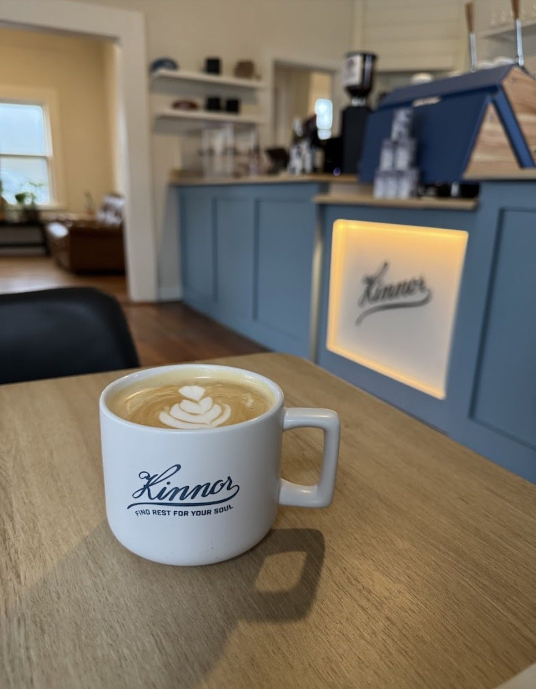
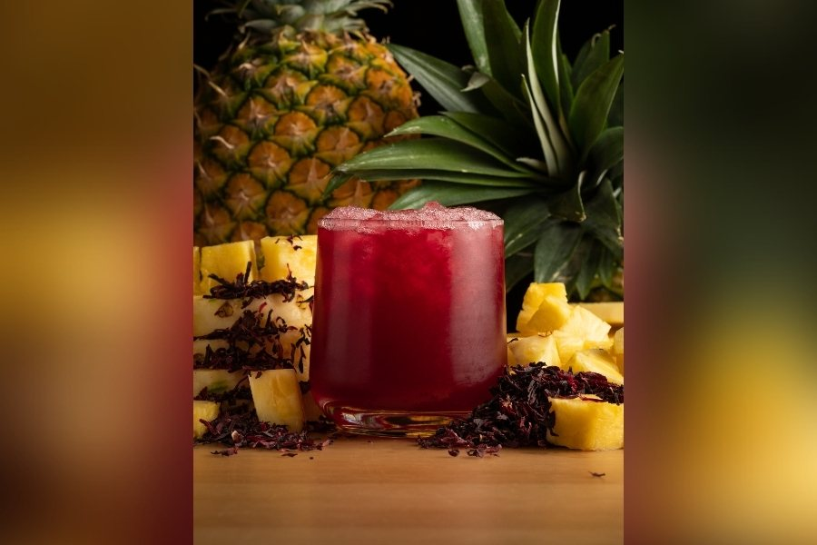
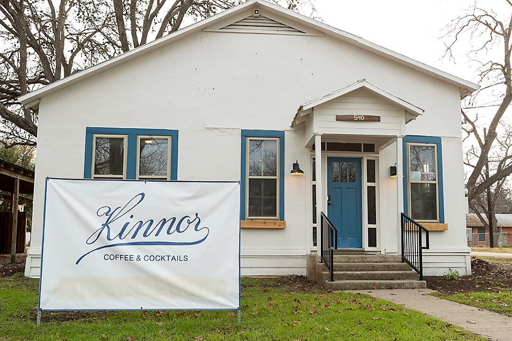
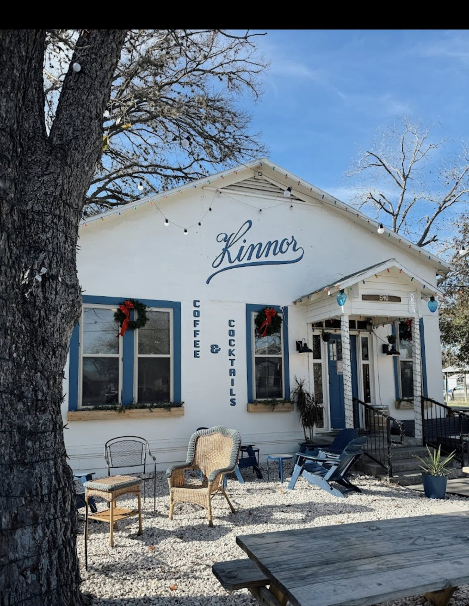
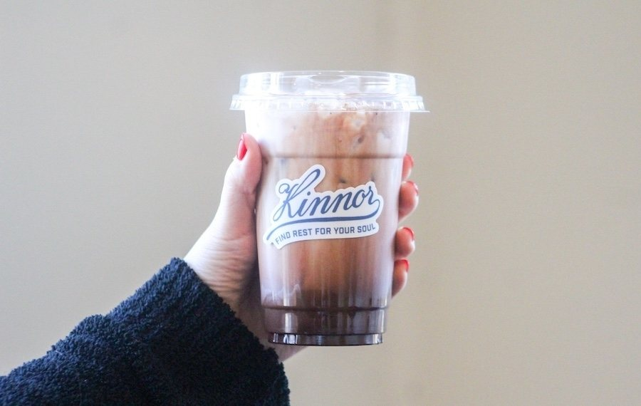

☀ By Day · from 7am
Coffee, dialed in.
Lattes and pour-overs done right — every syrup made in-house, from vanilla and lavender to butterscotch and mocha. No paper-cup default. Your drink, brought to your table in a real mug.
Find rest for your soul
New Braunfels · since 2020
Find rest
A specialty coffee shop by day and a craft cocktail lounge by night — set in a 1937 house in the heart of downtown. House-made syrups, real dishes, records spinning. People passionate for community and craft.

Kinnor
Hebrew for “lyre”
Our Story
Aaron & Ashley Brown turned a 1937 New Braunfels house into a gathering space built for slowing down. Not your home, not your work — that third place, where you’re looked in the eye and welcomed to linger. Coffee by morning, cocktails by evening, the same care all day.
Find rest for your soul.
One House, Two Moods
☀ By Day · from 7am
Lattes and pour-overs done right — every syrup made in-house, from vanilla and lavender to butterscotch and mocha. No paper-cup default. Your drink, brought to your table in a real mug.

☾ By Night · ’til 8pm
An espresso martini worth the trip, plus Kinnor originals like the Velvet Underground and Easy Lover, and local taps from 5 Stones. Same craft, after dark.
The Coffee Bar
Made on-site from all-natural ingredients — the reason regulars call it the best vanilla latte they’ve had. Add to any drink.
Fresh pastries & cinnamon rolls daily. Oat milk available.
Menu & pricing shown for preview; subject to change in-shop.
After Dark
The full coffee menu is available after dark, too.
The House on Castell
White clapboard and blue trim outside; blue cabinetry, warm oak, hanging plants and a wall of records inside. Big comfortable seating, soft light, quiet corners — the kind of room you settle into and lose track of time.
Drinks come to your table in real dishes, brought by hand. Everything here is designed to help you slow down.
Come find us


What People Say
“Probably the best vanilla latte I’ve ever had — and they make their own syrups on-site, all natural.”
“Great coffee by day and the cocktails are insanely good too. The espresso martinis are stellar.”
“The most charming little house — attention to detail in every drink, and the warmest welcome in town.”
Find Us
Find rest
Whether it’s a 7am pour-over or a nightcap with friends — there’s a seat for you on Castell Ave.